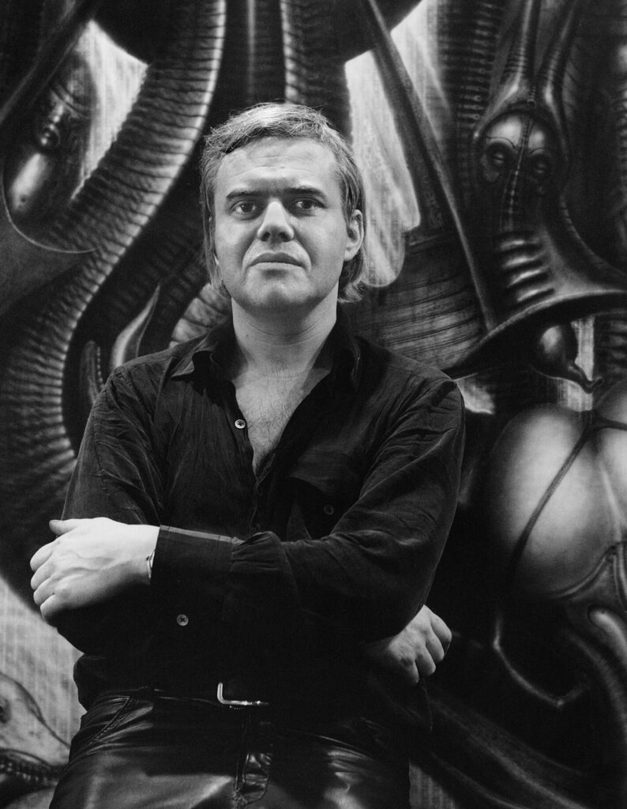

Hans Ruedi Giger, born February 5th, 1940 was a Swiss artist best known for
his airbrushed images that blended human physiques with machines, an art style known as "biomechanical".
He was part of the special effects team that won an Academy Award for the visual design of Ridley Scott's 1979 sci-fi horror film Alien
and was responsible for creating the Xenomorph Alien itself.
His work is on permanent display at the H.R. Giger Museum in Gruyères, Switzerland.
See the link below for information about the museum.

I never knew a lot about H.R. Giger before I started watching the Alien movies, but after becoming a big fan, I began looking into his work and learning more about him.
I learned that he was a very talented artist and that he had a very unique style of art. I also found out that he was a very private person and that he didn't like to be in the public eye.
I also knew that he was apart of the Alien movies, but I didn't know that he was the one who designed the Xenomorph Alien.
I also found out that he was a very talented musician and that he played in a band called "Cobra".